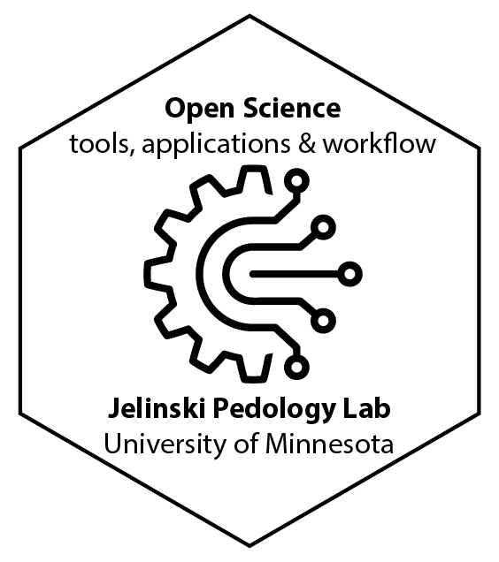

Open Science: Tools Applications, & Workflow

Preface
This book outlines an open, standardized workflow for use on all projects in the Jelinski lab. With the diverse library of tools, apps, and digital repositories available to you as a researcher, at times, it is extremely difficult to understand which ones to use and how to put together a coherent workflow that promotes the FAIR (Findable, Accesible, Interoperable, and Reusable) and FAIRER (Findable, Accesible, Interoperable, Reusable, Ethical, and Reproducible) open science principles in your work. My goal is to standardize workflow for all projects in our lab - or at the very least to provide a scaffolded, foundational approach that everyone can borrow and modify from as best fits their needs. This is not so much meant to force you into a particular way of doing your thinking things, but rather to free you up to do what’s really important, the research. Making decisions about how to name files, what format and style to use for code, how to structure project files and folders, and what tools and apps to use is exhausting, and these decisions take you away from the science. The goal of this standardized workflow is to produce open science that is easily reproducible, transparent, usable by others, and most importantly well organized and documented so that you and others can easily understand what you’ve done and how you’ve done it. There are a few principal concepts behind this workflow and how you can structure your work to be most productive:
No work is wasted work.
A major part of research is hitting dead ends, going down rabbit holes, and generally feeling like you might be wasting your time because it’s taking you so long to get to the correct analysis or perspective. However, none of this is waste of time. Every dead end is a door that has closed to allow you to find your path forward. It’s your job as a scientist and researcher to define and document those dead ends and not give up. Recognize that those dead ends are part of the process, and make those dead ends work for you. By using a standardized workflow even those dead ends become reproducible transparent learning experiences that are documented fully for you and others to grow from.
Reduce trivial decisions so that you can focus on science, your life, and your whole being.
One of my mentors as probationary faculty, Dr. Ed Nater, told me that a career in science “is a marathon, not a sprint”. Despite the modern urgency to publish as many papers as possible in a short amount of time, research still takes time. And often we don’t know exactly how long it is gonna take. It’s better to do good science then to do fast science. Of course ideally we would do good, fast science. This workflow will help you do that - it will help you do good science, create transparent, citeable and reproducible content, even from your unfinished drafts, dead ends, and false starts.
Additionally, because research is a marathon and not a sprint, it is absolutely important that you take care of your whole being. This means taking care of your body and your mind. Let me tell you a story.
As an academic, most of us who are in this for the career work long hours. I’ve been working long hours and overnights for as long as I can remember - this is normal in academia. I used to view this as “the grind”. I used to think that the answer to be more productive was just putting in more hours in the grind. If I could just stay up one more night, push through for three more hours, sit at my desk for 10-12 hours in a day, and work work work, I could produce more. What I realized as I’ve reached the middle of my career is that there are better ways to produce more which also allow you to be healthier than just grinding the large number of hours. Certainly hours are important, for example you probably are not gonna publish a research paper, write a thesis, write a dissertation, or be successful in a faculty job without putting in more than 40 hours a week and some overnights. But, those should not be the norm. There are ways to design your life so that those are few and far between. Striving for a physical and mental balance is extremely important and my years of grinding have taken a toll. Although they have given me a lot, and I’ve been able to achieve tenure, looking back I now see how I could have changed my processes to work fewer hours, be more physically healthy, more mentally available for my friends and family, and produce more.
Much of this starts with prioritizing your physical health. You simply can’t reach your top productivity if you are not physically healthy because the mind-body connection is strong. Physical health is a cornerstone for long-term productivity in any career. And science is no different. After years of mucking through different processes, workflows, and trial and error, I’m finally starting to reach an understanding regarding how to construct these processes to reduce decision fatigue and be more productive, allow me more time to do more things outside of work and to take care of myself my family. This all involves standardization. Jocko Willink is famous for his mantra “Discipline Equals Freedom”. This mantra also holds true in creative work such as academia. Although it seems counterintuitive and potentially restricting at first, standardized processes actually allow you to do better, more creative, more reproducible, and more creative and inspiring work. > All it takes to make creativity a part of your life is the willingness to make it a habit. It is the product of preparation and effort, and is within reach of everyone. - Twyla Tharp
This is because all of the small decisions that you make about, for example (just to name a few):
- What to name files and how to create a structure in a folder or set of folders,
- what app to use to do data analysis,
- how to write and structure code,
- what to do next when you have 15 minutes in your work schedule,
reduce your ability to focus on what really matters, generating data, analyzing data, the science and the writing. By standardizing workflows and processes, we relegate the trivial stuff to a trusted system This system is one that holds important information, and allows you to access it freely and readily, but makes all of the trivial decisions for you. This allows you to focus on just the information. It frees you to think more and more deeply about what really matters, to focus your time and effort outside of work on your physical and mental health.
Implementing a standardized workflow is just good science - and Open Science is the future (and the future is here now).
10 years ago, very few people were doing open science. Now with openscapes and a handful of other strong initiatives more and more people are doing open science in environmental fields. More journals require that you submit raw data, code or somehow package everything to make your analysis and results reproducible. This workflow will allow you to do that automatically as you build your project. When you get to the point of submitting a manuscript you will already have a citable online repository that you can point to when you submit your manuscript. This workflow also fosters a mindset of development and growth, where you “show your work” all the time. Showing your work all the time is a great way to:
- Foster collaboration,
- to be “constantly producing”, and
- to feel more accomplished and feel that you can be “done” at the end of a workday day.
In the beginning you may find implementing this workflow to be slower, and at first there will be a learning curve. However after 18 years of managing projects and doing science, I can tell you the time effort and mental strain saved from having an organized, standardized, and open process and workflow will save you an incredible amount of time, but it can also provide you a strong foundation that you can carry into the future and never duplicate or backtrack on work you have already done. I can’t tell you how many times I’ve gone back to read a paper that I’ve read five times just to fit it into another reference, or to format a bibliography, or to make sense of code that I wrote just six months ago, or to update the class syllabus documents or find different versions of files that are scattered across my computer, in cloud storage, and named different things. As you go on in your research career you will accumulate more and more of this baggage. If you start with a standardized workflow early in your career, this baggage will be manageable, well structured, available to you and others, and will actually promote a positive feedback loop whereby the work that you do now makes future work even easier and more creative.
Traveling together
I am a traveler on this road as well. I do not have all of the answers, but I have spent time developing a system and set of tools that have begun to pay huge dividends in my work and personal life. I hope to share these lessons learned with you.
I hope you will join me on this journey.